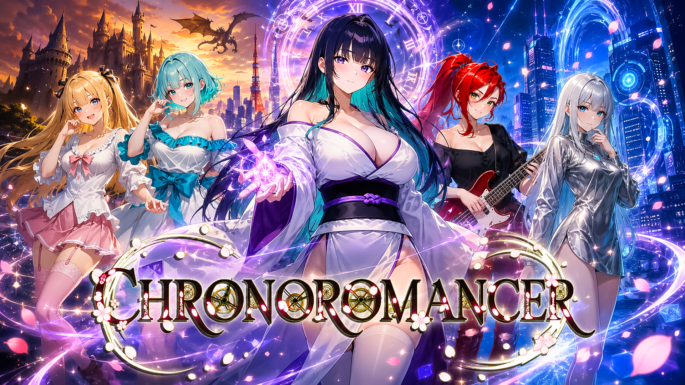

Present
Sashina
A composed guide whose knowledge of time reaches far beyond what she first admits.

Complete portrait directory
Chronoromancer contains more than 170 characters. Browse all 157 characters with currently published profile portraits, grouped by era and searchable in either website language.
Descriptions and era assignments are drawn from the current game data. Search works with names and both English and Simplified Chinese descriptions.
A composed guide whose knowledge of time reaches far beyond what she first admits.
A bright, open-hearted friend whose ordinary hopes make the future worth protecting.
A practical coastal shopkeeper who knows when patience matters more than force.
A sharp competitor who reads people as easily as she reads the dice.
A direct, capable doctor who treats personal questions with professional calm.
A spirited gamer whose easy confidence hides a more thoughtful side.
A resourceful partner who can turn a struggling enterprise into something lasting.
A formidable warrior balancing discipline, loyalty, and the life she wants for herself.
A dark elf whose ruthless certainty leaves little room for careless trust.
An energetic competitor who approaches the future at full speed.
A synthetic life whose questions about identity are inseparable from the future itself.
A gifted bionic specialist with quick hands, dry humor, and exacting standards.
A playful technologist who treats dangerous systems like puzzles waiting to be solved.
A fierce field specialist whose remedies can be as memorable as her warnings.
A sharp-tongued musician who guards vulnerability behind style and wit.
No characters match that search.
A cast that keeps growing
This directory includes every current character with a published profile portrait. As additional portraits and character records are completed in the game, they can be added through the same bilingual system.
See the game gallery